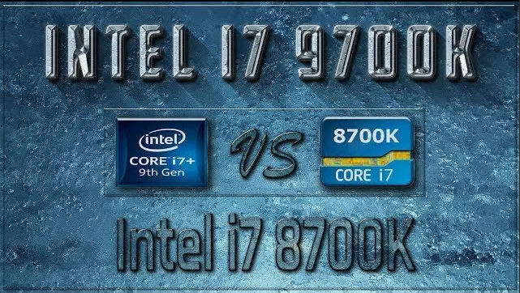

Ядра или потоки? i7 9700k vs i7 8700k
Многие из вас задаются вопросом, на чем собирать топовую игровую систему, и сегодня мы с вами попробуем во всем разобраться.
Прежде чем интересоваться результатами и строить на их основе выводы, давайте взглянем на характеристики процессоров и сравним
| i7 8700k | i7 9700k | |
| Cores | 6 | 8 |
| Threads | 12 | 8 |
| Base Clock (MHz) | 3700 | 3600 |
| Turbo Clock (MHz) | 4600 | 4900 |
| TDP (watt) | 95 | 95 |
| Socket | 1151 v2 | 1151 v2 |
Как мы видем, ничего, в общем то, почти не поменялось. Но частоты и количество ядер изменились.
Казалось бы, восемь ядер без гипертрейдинга должны показывать более слабый результат в мультипотоке, чем 12 логических ядер! Но Cinebench R15 показывает уверенное превосходство новинки как в однопоточных так и в мультипоточных задачах (1800 баллов против 1400 в multicore ). Причина тому - два дополнительных физических ядра и более агрессивная частотная формула в турбобусте.
Но это не единственные отличия. У процессоров девятого поколения с разблокированным множителем под крышкой припой. На температурах, правда, сказалось это не столь сильно - так как толщина кристалла увеличилась, а компоновка ядер стала еще более плотной. Однако нет предела совершенству - и некоторые энтузиасты не просто меняли штатный термоинтерфейс, но и стачивали кристалл в погоне за низкими температурами и максимальными частотами в разгоне. Но так или иначе, преиумещества новинка имеет перед нескальпированным предшественником с термопастой под теплораспределителем.
Итоги
9700K
Плюсы- Низкие температуры в состоянии "из коробки";
- Более высокая производительность на ядро/многопоточная производительность.
- Завышенная цена;
- Трудно скальпируется.
8700K
Плюсы- Легко скальпировать в домашних условиях
- Доступная цена
- Более горяч в состоянии "из коробки"
Если бы вы спросили меня, что бы я выбрал, я бы ответил i5 9400F. Холодный, доступный, имеет достаточную производительность на ядро для всех нынешних игр. Покупая же топовое решение всегда приходится мириться с какими либо недостатками.